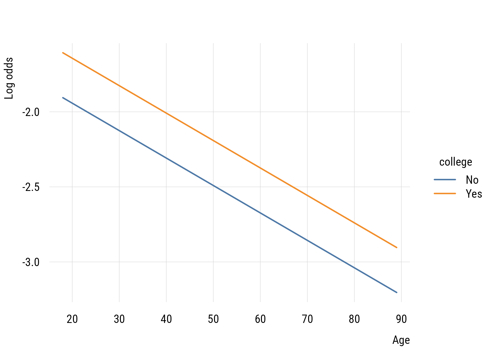
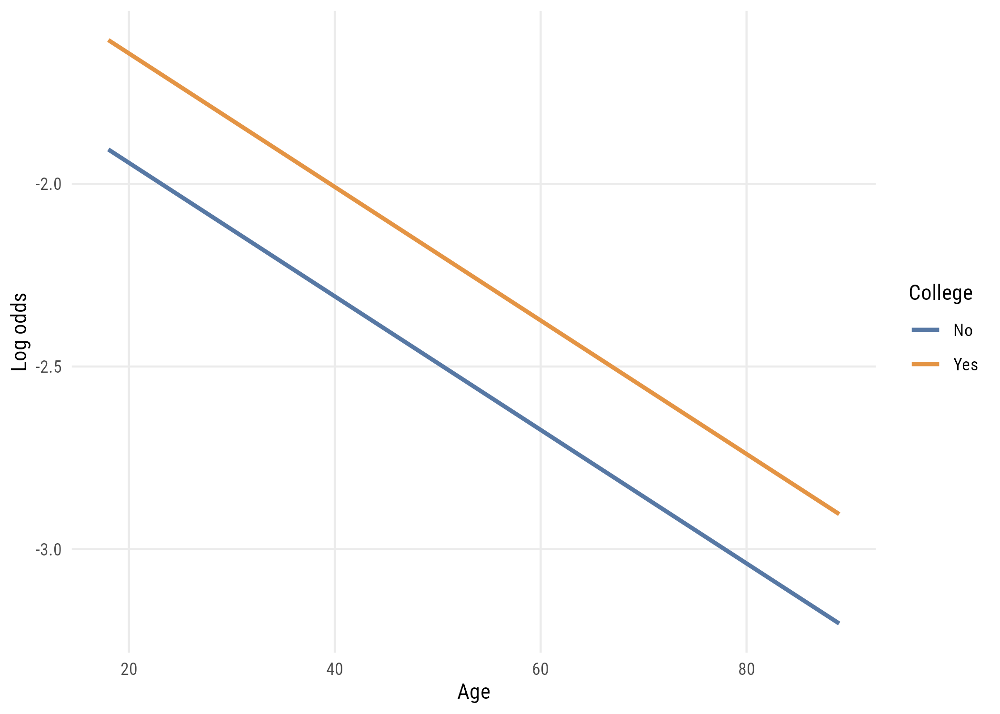

with \(\epsilon_i\) the person’s weirdness, their own departure from what the model expects. That picture has served us for twelve chapters. It cannot survive here.
Suppose the model predicts 0.6 for someone whose answer is 1. Their “weirdness” would be 0.4. For someone else with the same prediction who answered 0, it would be −0.6. There are only ever two possible values, and they are determined entirely by the prediction and the answer. Weirdness is no longer a quantity a person carries; it is just bookkeeping.
So we change what the model claims. Instead of
a systematic part, plus each person’s own departure from it
we say
a systematic part that determines the probability of each outcome, and then the outcome is a draw from that distribution
Nothing is added to a prediction. The prediction is a probability, and the randomness lives in the Bernoulli draw from Chapter 1 rather than in an error term.
The additive error term was never fundamental. It was what the normal distribution happens to permit, since a normal outcome can be written as its mean plus a symmetric disturbance. Take away normality and that convenience goes with it. What generalizes is not “prediction plus weirdness” but “the model specifies a distribution for \(y\); the predictors govern its parameters.” The linear models of Parts II and III were special cases all along.
16.1 From tables to models
Last time we looked at (in)dependence between two variables. We can also think of this as a simple model:
\[\text{admission} = f(\text{citizenship})\]
If we were only analyzing 2x2 tables, we could stop with tests of independence and odds ratios. But we want to go further, and it turns out the table already contains a model.
Here is the Berkeley table from Chapter 15 again, this time as conditional probabilities, the building blocks of models:
admitted
citizenship no yes
Other 0.959 0.041
U.S. 0.865 0.135
16.1.1 Working from data to model
Models are functions. Abstractly, \(y\) is some function of \(x\). That is, \(y\) is conditional on \(x\). In high school algebra you were handed the function and asked for the output. Here we have the opposite problem: we don’t have the model, we have the result of an unknown model.
So the intercept is .041 and the slope is .094. Writing it with the notation we’ll be using from here on:
\[
\pi(y = 1 \mid x) = \alpha + \beta x
\]
Choose one of the values of \(X\) to set to 0 (e.g., non-citizen) and one to set to 1 (e.g., citizen). Then \(\pi(y = 1 \mid x = 0) = \alpha\), because \(\beta \times 0\) drops out, and \(\pi(y = 1 \mid x = 1) = \alpha + \beta\). Substituting the conditional probabilities from the table gives \(.041 = \alpha\) and \(.135 = \alpha + \beta\), so \(\beta = .094\).
Remember that \(\alpha\) is a point and \(\beta\) is a distance.
16.1.2 Just when it was getting easy
As we discussed in Chapter 15, we don’t use the straight probabilities, but the logit (i.e., log odds). So the model becomes
Select one value of \(x\) to be 0 and the other 1. Calculate the log odds of the outcome for each row of the table. Then calculate \(\alpha\) (the log odds that \(y = 1\) when \(x = 0\)) and \(\beta\) (the log odds that \(y = 1\) when \(x = 1\), minus \(\alpha\)).
Basic interpretation: “The odds that someone with a college degree likes country music are only .35 times as great as for someone without a college degree.”
16.2 Estimating in R
Let’s show how to do this using a model. Let’s get the data, including a couple of binary variables:
abany: 1 = agrees that a woman should be able to have an abortion for any reason, 0 otherwise
notv: a variable built from tvhours that = 1 if the person watches no TV, 0 otherwise
d |>tabyl(college, abany) |>adorn_totals(c("row", "col"))
college 0 1 Total
No 283 326 609
Yes 141 264 405
Total 424 590 1014
We can convert this into conditional probabilities.
Show code
d |>summarize(m_abany =mean(abany), .by = college)
# A tibble: 2 x 2
college m_abany
<fct> <dbl>
1 No 0.535
2 Yes 0.652
16.2.1 Three links, one outcome
The GLM has two parts: the link, which says what function of the outcome is linear in the predictors, and the family, which is the probability distribution we are using. For a binary outcome the family is always binomial (Bernoulli). The link is a choice, and there are three common ones.
Identity link. This is the linear probability model, treating the outcome as continuous even when it’s really not.
# A tibble: 2 x 3
term estimate std.error
<chr> <dbl> <dbl>
1 (Intercept) 0.535 0.0202
2 collegeYes 0.117 0.0311
\[
\beta = \pi(y = 1 \mid x = 1) - \pi(y = 1 \mid x = 0)
\]
What is the unit of \(\beta\)? Compare these two numbers against the conditional probabilities above: \(\alpha\)is the probability for the reference group and \(\beta\)is the difference in probabilities.
Log link. Now the model is \(\log(\pi_i) = \alpha + \beta x_i\), or equivalently \(\pi_i = e^{\alpha + \beta x_i}\).
# A tibble: 2 x 3
term estimate std.error
<chr> <dbl> <dbl>
1 (Intercept) 0.141 0.0812
2 collegeYes 0.486 0.132
We can turn the college coefficient into an odds ratio by exponentiating it.
exp(coef(m1)[2])
collegeYes
1.625375
Term
Identity
Log
Logit
\(\alpha\)
probability
log prob.
log odds
\(\beta\)
diff. in prob.
log risk ratio
log odds ratio
Tip
Linear probability models (identity link) and logistic regression models (logit link) are both common in sociology. The main value of the former is simplicity and the main value of the latter is realism. As we’ll see below, sometimes the LPM can create predicted probabilities below 0 or above 1, which is suboptimal!
Notice that the logit \(\beta\) is the same log odds ratio we computed by hand from a 2x2 table at the start of the chapter. A logistic regression coefficient is a log odds ratio. With one binary predictor it is exactly the quantity from the table; with more predictors it is that quantity adjusted for the others, in the sense of Chapter 11.
16.3 Getting back to probabilities
An odds ratio of 1.63 does not mean college graduates are 1.63 times as likely to agree. Odds are not probabilities, and the two coincide only when the outcome is rare. Rather than making readers do that conversion in their heads, we can ask marginaleffects for the quantity directly.
d |>summarize(m_abany =mean(abany), .by = college)
# A tibble: 2 x 2
college m_abany
<fct> <dbl>
1 No 0.535
2 Yes 0.652
# get difference (default)avg_comparisons(m1, variables ="college")
Estimate Std. Error z Pr(>|z|) S 2.5 % 97.5 %
0.117 0.0311 3.74 <0.001 12.4 0.0555 0.178
Term: college
Type: response
Comparison: Yes - No
# get risk ratio, not odds ratio!avg_comparisons(m1, variables ="college", comparison ="ratio")
Estimate Std. Error z Pr(>|z|) S 2.5 % 97.5 %
1.22 0.0638 19.1 <0.001 267.4 1.09 1.34
Term: college
Type: response
Comparison: mean(Yes) / mean(No)
Look at what those two numbers are. The default difference is 0.117, the identity-link \(\beta\). The ratio is 1.218, the exponentiated log-link \(\beta\). All three models are describing the same table; the links just report it on different scales, and avg_comparisons() lets you ask for whichever one you want after fitting the logit.
TipReport probabilities
Odds ratios are what the model estimates, so they belong in a table. But they are badly suited to communicating a result, because almost nobody reasons in odds, and readers routinely convert them to probabilities in their heads incorrectly.
Report the average marginal effect on the probability scale alongside the coefficients. It costs one line of code and prevents a common misreading.
16.4 Adding a predictor
m2 <-glm(abany ~ college + age, # is this reasonable?data = d,family =binomial())tidy(m2)[, 1:3]
# A tibble: 3 x 3
term estimate std.error
<chr> <dbl> <dbl>
1 (Intercept) 0.617 0.197
2 collegeYes 0.492 0.133
3 age -0.00955 0.00360
Because the model is nonlinear in probability, the effect of age is not a straight line. Predicted probabilities show the curve.
Figure 16.2: Predicted probability of agreeing, by age and college.
And the average marginal effect of college, adjusting for age:
avg_slopes(m2, variables ="college")
Estimate Std. Error z Pr(>|z|) S 2.5 % 97.5 %
0.117 0.031 3.78 <0.001 12.7 0.0565 0.178
Term: college
Type: response
Comparison: Yes - No
Adjusting for age barely moves the college comparison.
16.5 A rarer outcome
The Bernoulli’s variance depends on its mean, so a rare outcome behaves differently from a common one. About 9% of respondents report watching no television at all.
m3 <-glm(notv ~ college + age, # is this reasonable?data = d,family =binomial())tidy(m3)[, 1:3]
# A tibble: 3 x 3
term estimate std.error
<chr> <dbl> <dbl>
1 (Intercept) -1.58 0.324
2 collegeYes 0.299 0.222
3 age -0.0183 0.00646
It is worth looking at this one on the log odds scale, where the model is by construction a pair of straight lines, “linear in the logit.”
link_data <-predictions( m3,newdata =datagrid(age =18:89, college =c("No", "Yes")),type ="link") |>as.data.frame()plt(estimate ~ age | college, data = link_data, type ="l", lwd =2,xlab ="Age", ylab ="Log odds")

Figure 16.3: The same model on the log odds scale: two parallel lines.
Show plot code
ggplot(link_data, aes(x = age, y = estimate, color = college)) +geom_line(linewidth =1) +labs(x ="Age", y ="Log odds", color ="College")

Figure 16.4: The same model on the log odds scale: two parallel lines.
That is the whole trick of the model: additive and parallel on the log odds scale, curved and squeezed toward the boundaries on the probability scale. Burn these two shapes into your memory.
The marginal effects, meanwhile, are not the same for everyone. slopes() gives one row per respondent:
age college estimate std.error
1 19 No -0.002031940 0.0009932325
2 25 No -0.001870056 0.0008687024
3 63 No -0.001052089 0.0002955040
4 31 Yes -0.002155430 0.0009512308
avg_slopes() is just the average of that column. When the outcome is rare, the per-person slopes are small everywhere, which is worth knowing before you report the average as though it described anyone in particular.
Term Contrast Estimate Std. Error z Pr(>|z|) S 2.5 % 97.5 %
age +1 -0.00147 0.000523 -2.80 0.00505 7.6 -0.00249 -0.000442
college Yes - No 0.02474 0.018725 1.32 0.18639 2.4 -0.01196 0.061444
Type: response
The college comparison is small and its interval includes zero. Compare that with the odds ratio:
exp(coef(m3)["collegeYes"])
collegeYes
1.349158
An odds ratio of 1.35 sounds substantial (“35% higher odds”) while the probability difference is about 2.5 percentage points and not distinguishable from zero. When the outcome is rare, odds ratios are large numbers attached to small differences.
16.6 Inference
There is no SSE here, so the F test is unavailable. What we use instead is Chapter 9: deviance and the likelihood ratio test.
m0 <-glm(abany ~1, data = d, family =binomial())anova(m0, m1, m2, test ="LRT")
Analysis of Deviance Table
Model 1: abany ~ 1
Model 2: abany ~ college
Model 3: abany ~ college + age
Resid. Df Resid. Dev Df Deviance Pr(>Chi)
1 1013 1378.4
2 1012 1364.7 1 13.6925 0.0002153 ***
3 1011 1357.7 1 7.0631 0.0078688 **
---
Signif. codes: 0 '***' 0.001 '**' 0.01 '*' 0.05 '.' 0.1 ' ' 1
Each line asks whether the added parameter reduced deviance by more than chance would deliver. Both do.
Note that all three models are fitted to the same 1,014 rows. That is not automatic. Dropping missing values separately for each model would silently change the data underneath the comparison, which Chapter 10 warned invalidates it.
Small, as pseudo-\(R^2\) values usually are, and (as that chapter insisted) not comparable to an \(R^2\) from a linear model. Appendix C shows how far apart the competing versions can get, and how little of a dichotomized outcome’s original association any of them recovers.
16.7 Should you use logistic regression at all?
We have now spent a chapter on the logistic model, so it may be surprising to end by saying that for many sociological problems the linear probability model is the better choice.
16.7.1 The two models usually agree
Fit both to the same specification and compare the linear model’s coefficients against the logistic model’s average marginal effects, the quantity we just spent several pages arguing you should report:
Show code
lpm_full <-lm(abany ~ college + age, data = d)logit_full <-glm(abany ~ college + age, data = d, family =binomial())ame <-as.data.frame(avg_comparisons(logit_full, variables =c("college", "age")))data.frame(term =c("college", "age"),LPM =round(c(coef(lpm_full)["collegeYes"], coef(lpm_full)["age"]), 5),logit_AME =round(c(ame$estimate[ame$term =="college"], ame$estimate[ame$term =="age"]), 5),row.names =NULL)
term LPM logit_AME
1 college 0.11751 0.11731
2 age -0.00230 -0.00228
They agree to three or four decimal places. This is typical rather than lucky: over the middle range of probabilities the logistic curve is close to straight, so its average slope is close to what a line would fit.
And notice what the linear model gives you for free. Its coefficients are the probability differences, so there is no exponentiating, no marginal effects step, and no chance for a reader to mistake an odds ratio for a risk ratio.
16.7.2 Out-of-range predictions are information
The standard objection is that a linear probability model can predict values outside \([0, 1]\). But consider what such a prediction is telling you.
lpm_bad <-lm(notv ~ educ + age +I(age^2), data = d)fitted_bad <-predict(lpm_bad)c(minimum =min(fitted_bad),maximum =max(fitted_bad),share_outside =mean(fitted_bad <0| fitted_bad >1))
minimum maximum share_outside
-0.10990297 0.14713108 0.02761341
Here, inside the data, about 2.8% of fitted values fall below zero. That is a signal that the specification is wrong. A quadratic in age has been fitted to a rare outcome and is predicting impossibilities for real respondents.
Now fit the same specification with a logit. It will produce perfectly well-behaved predictions between 0 and 1, and say nothing at all about the problem. The boundedness that gets advertised as logistic regression’s great advantage is, from this angle, a way of concealing misspecification. The linear model complains; the logistic model quietly absorbs.
16.7.3 One real cost of the linear model
The linear probability model does have a genuine technical problem. Because the outcome is Bernoulli, its variance is \(\pi(1-\pi)\), which depends on the prediction, so the errors cannot have constant variance, and the standard errors from lm() are wrong.
The fix is routine: use heteroskedasticity-consistent standard errors.
The estimates are identical. Only the standard errors change, and here not by much. Report the robust version and the objection is answered.
ImportantA defensible default
For most of the problems in this book (moderate probabilities, ordinary predictors, a description rather than a prediction machine), the linear probability model is a reasonable and arguably preferable default. Its coefficients are directly interpretable, it agrees with the logistic model’s marginal effects, and it tells you when something has gone wrong.
Logistic regression earns its place when probabilities are genuinely near the boundaries, when the response is sharply nonlinear, when you need predictions for new cases that must be valid probabilities, or when you want the likelihood machinery of Chapter 9 for model comparison.
What is not a good reason is the one usually given: that logistic regression is the “correct” model for a binary outcome and the linear model is a mistake. Both are approximations. One of them tells you when it is failing.
For a fuller version of this argument, see Hellevik (2009).
16.8 Recap
with a binary outcome the additive error term disappears; the model specifies a distribution for \(y\) and the predictors govern its probability
the linear models of Parts II and III were the special case that normality allowed
a 2x2 table already is a model, and \(\alpha\) and \(\beta\) can be read straight off the conditional probabilities
\(\alpha\) is a point and \(\beta\) is a distance
for a binary outcome the family is binomial and the link is a choice: identity gives differences in probability, log gives log risk ratios, logit gives log odds ratios
a logistic coefficient is a log odds ratio, and exponentiating gives an odds ratio
report probabilities: avg_comparisons() recovers the difference or the risk ratio from a fitted logit
on the log odds scale a logistic model is additive and parallel; on the probability scale it is curved
inference uses deviance and the likelihood ratio test rather than SSE and F
when an outcome is rare, large odds ratios can accompany trivial differences in probability
the linear probability model is often the better choice: it agrees closely with logistic marginal effects and its coefficients are already on the probability scale
out-of-range predictions inside the data are a useful warning that the specification is wrong
robust standard errors answer the main technical objection to it
Hellevik, Ottar. 2009. “Linear Versus Logistic Regression When the Dependent Variable Is a Dichotomy.”Quality & Quantity 43 (1): 59–74. https://doi.org/10.1007/s11135-007-9077-3.